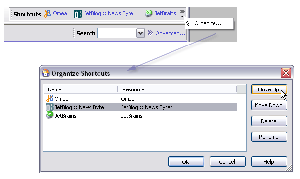
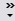
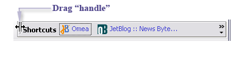
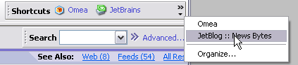
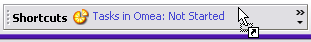
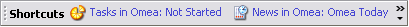

Using Shortcuts
Shortcuts are exactly that... a quick means of navigating directly to frequently-needed resources regardless of what Workspace or resource tab you are currently working in.
Shortcuts that you create appear in the Shortcuts Bar of the main window. You can create a Shortcut to any resource: a single item such as a newsgroup article or a web page, or to an aggregation such as a Category or a View. The target resource can be associated with any Workspace. You can change the order in which Shortcuts appear in the Shortcuts bar, and/or rename them.
You navigate directly to the resource(s) by clicking the relevant Shortcut. If the target resource is a different type than what you are currently working with, you will shift to the resource tab for the target resource type. For example, if a Shortcut is set to a feed and you are currently working with a newsgroup, you will shift to the Feeds tab when you click the Shortcut. Also, if the target resource is associated with a different Workspace, you will shift into that Workspace. The exception is Shortcuts to web pages that open in a new browser window. In that case, no switching of the resource tab or Workspace occurs.

The Shortcuts bar and the Organize Shortcuts dialog
Creating Shortcuts
To create a new Shortcut:
- Select any resource in any Workspace. It can be an individual item, a Category, or a View.
- Drag the selected resource and drop it in the Shortcuts bar.
Managing Shortcuts
You change the order in which Shortcuts appear in the Shortcuts Bar, delete Shortcuts from the Shortcuts Bar, or Rename individual shortcuts.
Changing the Appearance Order of Shortcuts
To change the appearance order of Shortcuts:
- In the Shortcuts Bar, click the "chevron" icon (  ), then click Organize. The Organize Shortcuts dialog appears.
- In the list of Shortcuts, select the Shortcut you want to move in the order of appearance.
- Click the Move Up or Move Down button as desired to shift the order of the selected Shortcut.
Shifting an item Up in the dialog moves it Left in the Shortcuts Bar. Moving an item Down in the dialog moves it Right in the Shortcuts Bar. Yes, it's kind of goofy.
Renaming a Shortcut
When you drag a resource into the Shortcuts Bar, it appears with a default name supplied by Omea ReaderOmea Pro. You can change this name for the Shortcuts Bar without affecting how the resource appears elsewhere.
To rename a Shortcut:
- In the Shortcuts Bar, click the "chevron" icon ( ), then click Organize. The Organize Shortcuts dialog appears.
- In the list of Shortcuts, select the Shortcut you want to rename.
- Click the Rename button. The Shortcut name becomes editable in the list.
- Type the new name and press Enter.
The name change takes effect when you click OK to close the dialog.
Deleting a Shortcut
To delete a Shortcut:
- In the Shortcuts Bar, right-click on the Shortcut you want to delete.
- Click Delete Shortcut on the pop-up menu.
Alternatively, you can delete Shortcuts in the Organize Shortcuts dialog.
Shortcut Tips and Tricks
Hiding and Showing the Shortcuts Bar
You can toggle the presence of the Shortcuts Bar using the main menu: View | Shortcuts Bar.
Resizing the Shortcuts Bar
When visible, the Shortcuts Bar adheres to the left edge of the main window. You can resize the width of the bar by dragging the "handle" on its left edge to the left or right.

Resizing the Shortcuts Bar
Accessing Hidden Shortcuts
If you have more Shortcuts than will fit into the Shortcuts Bar at its current width, some of the Shortcuts will not be visible. You can still access these hidden shortcuts and navigate to the target resource(s).
To access "hidden" shortcuts:
- In the Shortcuts Bar, click the "chevron" icon ( ).
- Click one of the shortcuts than now appear on the pop-up menu.
Accessing hidden Shortcuts
Shortcuts and Workspaces
You can now add shortcuts that will allow you to quickly jump to the View or View folder of the desired Workspace (if you have any Workspaces other than All of course).
To add such shortcut, select the desired View or View folder in the Views and Categories pane of some resource tab of a custom Workspace, then drag it and drop to the Shortcuts bar. As you drag the resource to the Shortcuts bar, the mouse pointer changes as in figure below.

Adding a shortcut
The shortcut which you have added while working in a different workspace (different from Main) will have the following name: name of the resource tab followed by the name of the Workspace, then a colon and a name of the View.

Shortcuts bar (Shortcuts from different workspaces have been added)
You can rename the shortcuts any time later using Organize Shortcuts dialog.
See also: